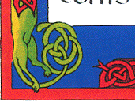

Si tout va bien, vous devez être en train de gribouiller sur tous les coins de feuilles encore vierges à votre portée. C’est normal, ne vous inquiétez pas. Mais vous voulez aller plus loin, retrouver le lyrisme héroïque fantaisie des Vikings, entrelacer les barbes de Freyr et de Thor...
Mais vous ne savez pas où commencer ni où finir, vos entrelacs tournent en rond... Ce que votre corps réclame est le sujet de ce chapitre :
Semi-encapsulation
Les enchevêtrements sont des entrelacs qui justement s’accrochent ici et là. Remarquez tout de suite qu’on ne peut pas faire n’importe quoi, ce qui commence doit finir et il n’est pas possible de faire un brin avec une seule extrémités. Garder à l’esprit ces deux extrémités est essentiel. On peut bien-sûr couper une lanière en deux à un moment donné comme la langue bifide du serpent, mais nous traiterons cela comme un nouveau brin.
Puisque vous maîtrisez sans peine le passage d’un graphe à son dual (révision), vous êtes habitué(e) à un graphe libre comme l’air, dual d’un graphe mis en boîte. La semi-encapsulation c’est couper la poire en deux : le motif est borné d’un côté par un mur et son autre moitié divague librement.
Remarquez qu’un tel graphe oblige le brin à contourner la muraille extérieure et faire tout le tour du motif avant de rentrer dans la masse.

Si vous coupez ce brin extérieur, vous obtenez justement un enchevêtrement, que vous pouvez attacher où bon vous semble.


Ce sont des motifs plus subtils à manipuler que ceux mis en boîte. Pour en composer du même genre que ceux-ci, il faut élaborer un motif, calculer son graphe dual, retourner celui-ci la tête en bas, et joindre ces deux graphes d’une manière harmonieuse (auto-duale pour être précis) en éliminant la moitié de la muraille.


Vous pouvez également vous entrainer sur des frises, triangulaires ou carrées, fermées d’un côté.

{kind=link}
{kind=link}
Vous pouvez faire de belles compositions avec des sujets dessinés, vous trouverez une bonne inspiration dans les livres d’Aidan Meehan :

Disons que vous vouliez entremêler la barbe de cet apôtre avec la queue de ce dragon. Pour celà, il faut délimiter l’espace où vont s’entrelacer vos brins. Repérez leurs commencements, l’articulation d’un bras, une chevelure, la naissance d’une queue ou d’une oreille... Puis décidez de là où vous voulez arrêter ces brins (a priori sur le bord de la zone).

Placez un sommet à chacune de ces extrémités, organisez les par paires adjacentes (pas nécessairement du même brin) et tracez un mur entre chaque paire. Votre motif s’ébattra d’un côté seulement de ce mur.
Placez à l’intérieur de la zone vos motifs préférés mis en boîte et à l’échelle. L’espacement entre leurs sommets vous fixe la largeur des brins. Vous ouvrirez certains de ces murs.
Égrenez des sommets le long de vos murailles extérieurs avec ce même espacement.
Finalement, faîtes pousser un graphe dans l’espace laissé vide, s’appuyant sur les sommets posés le long des murs externes et internes (les boîtes que vous avez mis dans votre espace).
Et voilà.
{kind=link}